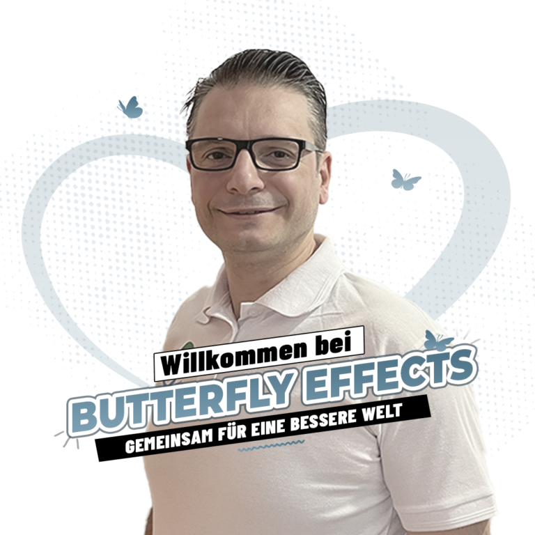
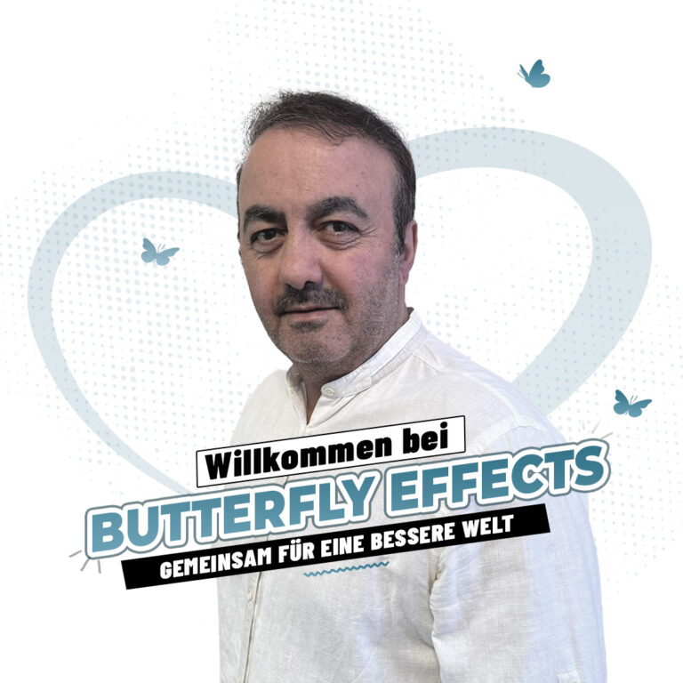
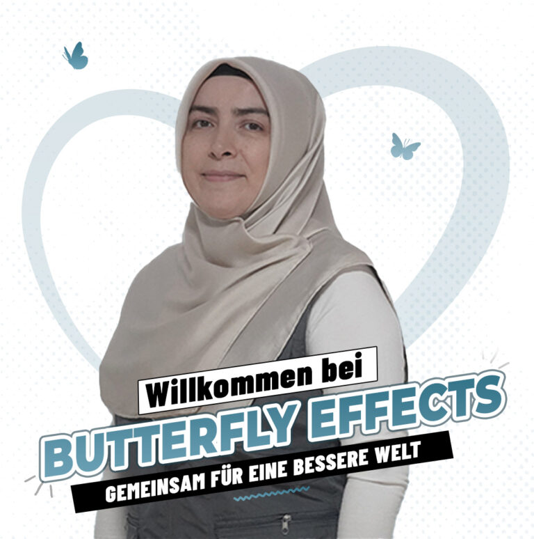

Ahmed ErdoganEhrenamtsprofil · Funktion bestätigen
Ehrenamtliche & Freiwillige
Zeit, Erfahrung und Fähigkeiten werden zu konkreter Hilfe, wenn Menschen gemeinsam Verantwortung übernehmen.

Engagement
Gutes Ehrenamt verbindet persönliche Motivation mit klaren Aufgaben, verlässlicher Abstimmung und Wertschätzung.
Menschen hinter der Arbeit
Die Bilder stammen aus der offiziellen Ehrenamtsseite. Rollen und Zuständigkeiten werden erst nach Bestätigung ergänzt.




Interessen, Erfahrung und Verfügbarkeit mitteilen.
Aufgaben, Erwartungen und Einsatzorte besprechen.
Informationen und notwendige Einweisung erhalten.
Verlässlich im passenden Aufgabenbereich unterstützen.
Kontakt: +49 (0) 40 466 381 42 · info@butterfly-effects.org
Erreichbarkeit laut Bestandswebsite: Montag bis Freitag, 11:00–17:00 Uhr.